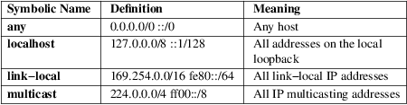

systemd.resource-control − Resource control unit settings
slice.slice, scope.scope, service.service, socket.socket, mount.mount, swap.swap
Unit configuration files for services, slices, scopes, sockets, mount points, and swap devices share a subset of configuration options for resource control of spawned processes. Internally, this relies on the Linux Control Groups (cgroups) kernel concept for organizing processes in a hierarchical tree of named groups for the purpose of resource management.
This man page lists the configuration options shared by those six unit types. See systemd.unit(5) for the common options of all unit configuration files, and systemd.slice(5), systemd.scope(5), systemd.service(5), systemd.socket(5), systemd.mount(5), and systemd.swap(5) for more information on the specific unit configuration files. The resource control configuration options are configured in the [Slice], [Scope], [Service], [Socket], [Mount], or [Swap] sections, depending on the unit type.
In addition, options which control resources available to programs executed by systemd are listed in systemd.exec(5). Those options complement options listed here.
Enabling and
disabling controllers
Controllers in the cgroup hierarchy are hierarchical, and
resource control is realized by distributing resource
assignments between siblings in branches of the cgroup
hierarchy. There is no need to explicitly enable a
cgroup controller for a unit. systemd will instruct
the kernel to enable a controller for a given unit when this
unit has configuration for a given controller. For example,
when CPUWeight= is set, the cpu controller
will be enabled, and when TasksMax= are set, the
pids controller will be enabled. In addition, various
controllers may be also be enabled explicitly via the
MemoryAccounting=/TasksAccounting=/IOAccounting=
settings. Because of how the cgroup hierarchy works,
controllers will be automatically enabled for all parent
units and for any sibling units starting with the lowest
level at which a controller is enabled. Units for which a
controller is enabled may be subject to resource control
even if they don't have any explicit configuration.
Setting Delegate= enables any delegated controllers for that unit (see below). The delegatee may then enable controllers for its children as appropriate. In particular, if the delegatee is systemd (in the user@.service unit), it will repeat the same logic as the system instance and enable controllers for user units which have resource limits configured, and their siblings and parents and parents' siblings.
Controllers may be disabled for parts of the cgroup hierarchy with DisableControllers= (see below).
Example 1. Enabling and disabling controllers
−.slice
/ \
/−−−−−/
\−−−−−−−−−−−−−−\
/ \
system.slice user.slice
/ \ / \
/ \ / \
/ \ user@42.service user@1000.service
/ \ Delegate= Delegate=yes
a.service b.slice / \
CPUWeight=20 DisableControllers=cpu / \
/ \ app.slice session.slice
/ \ CPUWeight=100 CPUWeight=100
/ \
b1.service b2.service
CPUWeight=1000
In this hierarchy, the cpu controller is enabled for all units shown except b1.service and b2.service. Because there is no explicit configuration for system.slice and user.slice, CPU resources will be split equally between them. Similarly, resources are allocated equally between children of user.slice and between the child slices beneath user@1000.service. Assuming that there is no futher configuration of resources or delegation below slices app.slice or session.slice, the cpu controller would not be enabled for units in those slices and CPU resources would be further allocated using other mechanisms, e.g. based on nice levels. The manager for user 42 has delegation enabled without any controllers, i.e. it can manipulate its subtree of the cgroup hierarchy, but without resource control.
In the slice system.slice, CPU resources are split 1:6 for service a.service, and 5:6 for slice b.slice, because slice b.slice gets the default value of 100 for cpu.weight when CPUWeight= is not set.
CPUWeight= setting in service b2.service is neutralized by DisableControllers= in slice b.slice, so the cpu controller would not be enabled for services b1.service and b2.service, and CPU resources would be further allocated using other mechanisms, e.g. based on nice levels.
Setting
resource controls for a group of related units
As described in systemd.unit(5), the settings listed
here may be set through the main file of a unit and
drop−in snippets in *.d/ directories. The list of
directories searched for drop−ins includes names
formed by repeatedly truncating the unit name after all
dashes. This is particularly convenient to set resource
limits for a group of units with similar names.
For example, every user gets their own slice user−nnn.slice. Drop−ins with local configuration that affect user 1000 may be placed in /etc/systemd/system/user−1000.slice, /etc/systemd/system/user−1000.slice.d/*.conf, but also /etc/systemd/system/user−.slice.d/*.conf. This last directory applies to all user slices.
See the New Control Group Interfaces [1] for an introduction on how to make use of resource control APIs from programs.
The following dependencies are implicitly added:
• Units with the Slice= setting set automatically acquire Requires= and After= dependencies on the specified slice unit.
Units of the types listed above can have settings for resource control configuration:
CPUAccounting=
Turn on CPU usage accounting for this unit. Takes a boolean argument. Note that turning on CPU accounting for one unit will also implicitly turn it on for all units contained in the same slice and for all its parent slices and the units contained therein. The system default for this setting may be controlled with DefaultCPUAccounting= in systemd-system.conf(5).
Under the unified cgroup hierarchy, CPU accounting is available for all units and this setting has no effect.
CPUWeight=weight, StartupCPUWeight=weight
These settings control the cpu controller in the unified hierarchy.
These options accept an integer value or a the special string "idle":
• If set to an integer value, assign the specified CPU time weight to the processes executed, if the unified control group hierarchy is used on the system. These options control the "cpu.weight" control group attribute. The allowed range is 1 to 10000. Defaults to unset, but the kernel default is 100. For details about this control group attribute, see Control Groups v2 [2] and CFS Scheduler [3] . The available CPU time is split up among all units within one slice relative to their CPU time weight. A higher weight means more CPU time, a lower weight means less.
• If set to the special string "idle", mark the cgroup for "idle scheduling", which means that it will get CPU resources only when there are no processes not marked in this way to execute in this cgroup or its siblings. This setting corresponds to the "cpu.idle" cgroup attribute.
Note that this value only has an effect on cgroup−v2, for cgroup−v1 it is equivalent to the minimum weight.
While StartupCPUWeight= applies to the startup and shutdown phases of the system, CPUWeight= applies to normal runtime of the system, and if the former is not set also to the startup and shutdown phases. Using StartupCPUWeight= allows prioritizing specific services at boot−up and shutdown differently than during normal runtime.
In addition to the resource allocation performed by the cpu controller, the kernel may automatically divide resources based on session−id grouping, see "The autogroup feature" in sched(7). The effect of this feature is similar to the cpu controller with no explicit configuration, so users should be careful to not mistake one for the other.
CPUQuota=
This setting controls the cpu controller in the unified hierarchy.
Assign the specified CPU time quota to the processes executed. Takes a percentage value, suffixed with "%". The percentage specifies how much CPU time the unit shall get at maximum, relative to the total CPU time available on one CPU. Use values > 100% for allotting CPU time on more than one CPU. This controls the "cpu.max" attribute on the unified control group hierarchy and "cpu.cfs_quota_us" on legacy. For details about these control group attributes, see Control Groups v2 [2] and CFS Bandwidth Control [4] . Setting CPUQuota= to an empty value unsets the quota.
Example: CPUQuota=20% ensures that the executed processes will never get more than 20% CPU time on one CPU.
CPUQuotaPeriodSec=
This setting controls the cpu controller in the unified hierarchy.
Assign the duration over which the CPU time quota specified by CPUQuota= is measured. Takes a time duration value in seconds, with an optional suffix such as "ms" for milliseconds (or "s" for seconds.) The default setting is 100ms. The period is clamped to the range supported by the kernel, which is [1ms, 1000ms]. Additionally, the period is adjusted up so that the quota interval is also at least 1ms. Setting CPUQuotaPeriodSec= to an empty value resets it to the default.
This controls the second field of "cpu.max" attribute on the unified control group hierarchy and "cpu.cfs_period_us" on legacy. For details about these control group attributes, see Control Groups v2 [2] and CFS Scheduler [3] .
Example: CPUQuotaPeriodSec=10ms to request that the CPU quota is measured in periods of 10ms.
AllowedCPUs=, StartupAllowedCPUs=
This setting controls the cpuset controller in the unified hierarchy.
Restrict processes to be executed on specific CPUs. Takes a list of CPU indices or ranges separated by either whitespace or commas. CPU ranges are specified by the lower and upper CPU indices separated by a dash.
Setting AllowedCPUs= or StartupAllowedCPUs= doesn't guarantee that all of the CPUs will be used by the processes as it may be limited by parent units. The effective configuration is reported as EffectiveCPUs=.
While StartupAllowedCPUs= applies to the startup and shutdown phases of the system, AllowedCPUs= applies to normal runtime of the system, and if the former is not set also to the startup and shutdown phases. Using StartupAllowedCPUs= allows prioritizing specific services at boot−up and shutdown differently than during normal runtime.
This setting is supported only with the unified control group hierarchy.
AllowedMemoryNodes=, StartupAllowedMemoryNodes=
These settings control the cpuset controller in the unified hierarchy.
Restrict processes to be executed on specific memory NUMA nodes. Takes a list of memory NUMA nodes indices or ranges separated by either whitespace or commas. Memory NUMA nodes ranges are specified by the lower and upper NUMA nodes indices separated by a dash.
Setting AllowedMemoryNodes= or StartupAllowedMemoryNodes= doesn't guarantee that all of the memory NUMA nodes will be used by the processes as it may be limited by parent units. The effective configuration is reported as EffectiveMemoryNodes=.
While StartupAllowedMemoryNodes= applies to the startup and shutdown phases of the system, AllowedMemoryNodes= applies to normal runtime of the system, and if the former is not set also to the startup and shutdown phases. Using StartupAllowedMemoryNodes= allows prioritizing specific services at boot−up and shutdown differently than during normal runtime.
This setting is supported only with the unified control group hierarchy.
MemoryAccounting=
This setting controls the memory controller in the unified hierarchy.
Turn on process and kernel memory accounting for this unit. Takes a boolean argument. Note that turning on memory accounting for one unit will also implicitly turn it on for all units contained in the same slice and for all its parent slices and the units contained therein. The system default for this setting may be controlled with DefaultMemoryAccounting= in systemd-system.conf(5).
MemoryMin=bytes, MemoryLow=bytes
These settings control the memory controller in the unified hierarchy.
Specify the memory usage protection of the executed processes in this unit. When reclaiming memory, the unit is treated as if it was using less memory resulting in memory to be preferentially reclaimed from unprotected units. Using MemoryLow= results in a weaker protection where memory may still be reclaimed to avoid invoking the OOM killer in case there is no other reclaimable memory.
For a protection to be effective, it is generally required to set a corresponding allocation on all ancestors, which is then distributed between children (with the exception of the root slice). Any MemoryMin= or MemoryLow= allocation that is not explicitly distributed to specific children is used to create a shared protection for all children. As this is a shared protection, the children will freely compete for the memory.
Takes a memory size in bytes. If the value is suffixed with K, M, G or T, the specified memory size is parsed as Kilobytes, Megabytes, Gigabytes, or Terabytes (with the base 1024), respectively. Alternatively, a percentage value may be specified, which is taken relative to the installed physical memory on the system. If assigned the special value "infinity", all available memory is protected, which may be useful in order to always inherit all of the protection afforded by ancestors. This controls the "memory.min" or "memory.low" control group attribute. For details about this control group attribute, see Memory Interface Files [5] .
Units may have their children use a default "memory.min" or "memory.low" value by specifying DefaultMemoryMin= or DefaultMemoryLow=, which has the same semantics as MemoryMin= and MemoryLow=. This setting does not affect "memory.min" or "memory.low" in the unit itself. Using it to set a default child allocation is only useful on kernels older than 5.7, which do not support the "memory_recursiveprot" cgroup2 mount option.
MemoryHigh=bytes
These settings control the memory controller in the unified hierarchy.
Specify the throttling limit on memory usage of the executed processes in this unit. Memory usage may go above the limit if unavoidable, but the processes are heavily slowed down and memory is taken away aggressively in such cases. This is the main mechanism to control memory usage of a unit.
Takes a memory size in bytes. If the value is suffixed with K, M, G or T, the specified memory size is parsed as Kilobytes, Megabytes, Gigabytes, or Terabytes (with the base 1024), respectively. Alternatively, a percentage value may be specified, which is taken relative to the installed physical memory on the system. If assigned the special value "infinity", no memory throttling is applied. This controls the "memory.high" control group attribute. For details about this control group attribute, see Memory Interface Files [5] .
MemoryMax=bytes
These settings control the memory controller in the unified hierarchy.
Specify the absolute limit on memory usage of the executed processes in this unit. If memory usage cannot be contained under the limit, out−of−memory killer is invoked inside the unit. It is recommended to use MemoryHigh= as the main control mechanism and use MemoryMax= as the last line of defense.
Takes a memory size in bytes. If the value is suffixed with K, M, G or T, the specified memory size is parsed as Kilobytes, Megabytes, Gigabytes, or Terabytes (with the base 1024), respectively. Alternatively, a percentage value may be specified, which is taken relative to the installed physical memory on the system. If assigned the special value "infinity", no memory limit is applied. This controls the "memory.max" control group attribute. For details about this control group attribute, see Memory Interface Files [5] .
MemorySwapMax=bytes
These settings control the memory controller in the unified hierarchy.
Specify the absolute limit on swap usage of the executed processes in this unit.
Takes a swap size in bytes. If the value is suffixed with K, M, G or T, the specified swap size is parsed as Kilobytes, Megabytes, Gigabytes, or Terabytes (with the base 1024), respectively. If assigned the special value "infinity", no swap limit is applied. These settings control the "memory.swap.max" control group attribute. For details about this control group attribute, see Memory Interface Files [5] .
MemoryZSwapMax=bytes
These settings control the memory controller in the unified hierarchy.
Specify the absolute limit on zswap usage of the processes in this unit. Zswap is a lightweight compressed cache for swap pages. It takes pages that are in the process of being swapped out and attempts to compress them into a dynamically allocated RAM−based memory pool. If the limit specified is hit, no entries from this unit will be stored in the pool until existing entries are faulted back or written out to disk. See the kernel's Zswap [6] documentation for more details.
Takes a size in bytes. If the value is suffixed with K, M, G or T, the specified size is parsed as Kilobytes, Megabytes, Gigabytes, or Terabytes (with the base 1024), respectively. If assigned the special value "infinity", no limit is applied. These settings control the "memory.zswap.max" control group attribute. For details about this control group attribute, see Memory Interface Files [5] .
TasksAccounting=
This setting controls the pids controller in the unified hierarchy.
Turn on task accounting for this unit. Takes a boolean argument. If enabled, the kernel will keep track of the total number of tasks in the unit and its children. This number includes both kernel threads and userspace processes, with each thread counted individually. Note that turning on tasks accounting for one unit will also implicitly turn it on for all units contained in the same slice and for all its parent slices and the units contained therein. The system default for this setting may be controlled with DefaultTasksAccounting= in systemd-system.conf(5).
TasksMax=N
This setting controls the pids controller in the unified hierarchy.
Specify the maximum number of tasks that may be created in the unit. This ensures that the number of tasks accounted for the unit (see above) stays below a specific limit. This either takes an absolute number of tasks or a percentage value that is taken relative to the configured maximum number of tasks on the system. If assigned the special value "infinity", no tasks limit is applied. This controls the "pids.max" control group attribute. For details about this control group attribute, the pids controller [7] .
The system default for this setting may be controlled with DefaultTasksMax= in systemd-system.conf(5).
IOAccounting=
This setting controls the io controller in the unified hierarchy.
Turn on Block I/O accounting for this unit, if the unified control group hierarchy is used on the system. Takes a boolean argument. Note that turning on block I/O accounting for one unit will also implicitly turn it on for all units contained in the same slice and all for its parent slices and the units contained therein. The system default for this setting may be controlled with DefaultIOAccounting= in systemd-system.conf(5).
IOWeight=weight, StartupIOWeight=weight
These settings control the io controller in the unified hierarchy.
Set the default overall block I/O weight for the executed processes, if the unified control group hierarchy is used on the system. Takes a single weight value (between 1 and 10000) to set the default block I/O weight. This controls the "io.weight" control group attribute, which defaults to 100. For details about this control group attribute, see IO Interface Files [8] . The available I/O bandwidth is split up among all units within one slice relative to their block I/O weight. A higher weight means more I/O bandwidth, a lower weight means less.
While StartupIOWeight= applies to the startup and shutdown phases of the system, IOWeight= applies to the later runtime of the system, and if the former is not set also to the startup and shutdown phases. This allows prioritizing specific services at boot−up and shutdown differently than during runtime.
IODeviceWeight=device weight
This setting controls the io controller in the unified hierarchy.
Set the per−device overall block I/O weight for the executed processes, if the unified control group hierarchy is used on the system. Takes a space−separated pair of a file path and a weight value to specify the device specific weight value, between 1 and 10000. (Example: "/dev/sda 1000"). The file path may be specified as path to a block device node or as any other file, in which case the backing block device of the file system of the file is determined. This controls the "io.weight" control group attribute, which defaults to 100. Use this option multiple times to set weights for multiple devices. For details about this control group attribute, see IO Interface Files [8] .
The specified device node should reference a block device that has an I/O scheduler associated, i.e. should not refer to partition or loopback block devices, but to the originating, physical device. When a path to a regular file or directory is specified it is attempted to discover the correct originating device backing the file system of the specified path. This works correctly only for simpler cases, where the file system is directly placed on a partition or physical block device, or where simple 1:1 encryption using dm−crypt/LUKS is used. This discovery does not cover complex storage and in particular RAID and volume management storage devices.
IOReadBandwidthMax=device bytes, IOWriteBandwidthMax=device bytes
These settings control the io controller in the unified hierarchy.
Set the per−device overall block I/O bandwidth maximum limit for the executed processes, if the unified control group hierarchy is used on the system. This limit is not work−conserving and the executed processes are not allowed to use more even if the device has idle capacity. Takes a space−separated pair of a file path and a bandwidth value (in bytes per second) to specify the device specific bandwidth. The file path may be a path to a block device node, or as any other file in which case the backing block device of the file system of the file is used. If the bandwidth is suffixed with K, M, G, or T, the specified bandwidth is parsed as Kilobytes, Megabytes, Gigabytes, or Terabytes, respectively, to the base of 1000. (Example: "/dev/disk/by−path/pci−0000:00:1f.2−scsi−0:0:0:0 5M"). This controls the "io.max" control group attributes. Use this option multiple times to set bandwidth limits for multiple devices. For details about this control group attribute, see IO Interface Files [8] .
Similar restrictions on block device discovery as for IODeviceWeight= apply, see above.
IOReadIOPSMax=device IOPS, IOWriteIOPSMax=device IOPS
These settings control the io controller in the unified hierarchy.
Set the per−device overall block I/O IOs−Per−Second maximum limit for the executed processes, if the unified control group hierarchy is used on the system. This limit is not work−conserving and the executed processes are not allowed to use more even if the device has idle capacity. Takes a space−separated pair of a file path and an IOPS value to specify the device specific IOPS. The file path may be a path to a block device node, or as any other file in which case the backing block device of the file system of the file is used. If the IOPS is suffixed with K, M, G, or T, the specified IOPS is parsed as KiloIOPS, MegaIOPS, GigaIOPS, or TeraIOPS, respectively, to the base of 1000. (Example: "/dev/disk/by−path/pci−0000:00:1f.2−scsi−0:0:0:0 1K"). This controls the "io.max" control group attributes. Use this option multiple times to set IOPS limits for multiple devices. For details about this control group attribute, see IO Interface Files [8] .
Similar restrictions on block device discovery as for IODeviceWeight= apply, see above.
IODeviceLatencyTargetSec=device target
This setting controls the io controller in the unified hierarchy.
Set the per−device average target I/O latency for the executed processes, if the unified control group hierarchy is used on the system. Takes a file path and a timespan separated by a space to specify the device specific latency target. (Example: "/dev/sda 25ms"). The file path may be specified as path to a block device node or as any other file, in which case the backing block device of the file system of the file is determined. This controls the "io.latency" control group attribute. Use this option multiple times to set latency target for multiple devices. For details about this control group attribute, see IO Interface Files [8] .
Implies "IOAccounting=yes".
These settings are supported only if the unified control group hierarchy is used.
Similar restrictions on block device discovery as for IODeviceWeight= apply, see above.
IPAccounting=
Takes a boolean argument. If true, turns on IPv4 and IPv6 network traffic accounting for packets sent or received by the unit. When this option is turned on, all IPv4 and IPv6 sockets created by any process of the unit are accounted for.
When this option is used in socket units, it applies to all IPv4 and IPv6 sockets associated with it (including both listening and connection sockets where this applies). Note that for socket−activated services, this configuration setting and the accounting data of the service unit and the socket unit are kept separate, and displayed separately. No propagation of the setting and the collected statistics is done, in either direction. Moreover, any traffic sent or received on any of the socket unit's sockets is accounted to the socket unit — and never to the service unit it might have activated, even if the socket is used by it.
The system default for this setting may be controlled with DefaultIPAccounting= in systemd-system.conf(5).
IPAddressAllow=ADDRESS[/PREFIXLENGTH]..., IPAddressDeny=ADDRESS[/PREFIXLENGTH]...
Turn on network traffic filtering for IP packets sent and received over AF_INET and AF_INET6 sockets. Both directives take a space separated list of IPv4 or IPv6 addresses, each optionally suffixed with an address prefix length in bits after a "/" character. If the suffix is omitted, the address is considered a host address, i.e. the filter covers the whole address (32 bits for IPv4, 128 bits for IPv6).
The access lists configured with this option are applied to all sockets created by processes of this unit (or in the case of socket units, associated with it). The lists are implicitly combined with any lists configured for any of the parent slice units this unit might be a member of. By default both access lists are empty. Both ingress and egress traffic is filtered by these settings. In case of ingress traffic the source IP address is checked against these access lists, in case of egress traffic the destination IP address is checked. The following rules are applied in turn:
• Access is granted when the checked IP address matches an entry in the IPAddressAllow= list.
• Otherwise, access is denied when the checked IP address matches an entry in the IPAddressDeny= list.
• Otherwise, access is granted.
In order to implement an allow−listing IP firewall, it is recommended to use a IPAddressDeny=any setting on an upper−level slice unit (such as the root slice −.slice or the slice containing all system services system.slice – see systemd.special(7) for details on these slice units), plus individual per−service IPAddressAllow= lines permitting network access to relevant services, and only them.
Note that for socket−activated services, the IP access list configured on the socket unit applies to all sockets associated with it directly, but not to any sockets created by the ultimately activated services for it. Conversely, the IP access list configured for the service is not applied to any sockets passed into the service via socket activation. Thus, it is usually a good idea to replicate the IP access lists on both the socket and the service unit. Nevertheless, it may make sense to maintain one list more open and the other one more restricted, depending on the usecase.
If these settings are used multiple times in the same unit the specified lists are combined. If an empty string is assigned to these settings the specific access list is reset and all previous settings undone.
In place of explicit IPv4 or IPv6 address and prefix length specifications a small set of symbolic names may be used. The following names are defined:
Table 1. Special address/network names

Note that these settings might not be supported on some systems (for example if eBPF control group support is not enabled in the underlying kernel or container manager). These settings will have no effect in that case. If compatibility with such systems is desired it is hence recommended to not exclusively rely on them for IP security.
This option cannot be bypassed by prefixing "+" to the executable path in the service unit, as it applies to the whole control group.
IPIngressFilterPath=BPF_FS_PROGRAM_PATH, IPEgressFilterPath=BPF_FS_PROGRAM_PATH
Add custom network traffic filters implemented as BPF programs, applying to all IP packets sent and received over AF_INET and AF_INET6 sockets. Takes an absolute path to a pinned BPF program in the BPF virtual filesystem (/sys/fs/bpf/).
The filters configured with this option are applied to all sockets created by processes of this unit (or in the case of socket units, associated with it). The filters are loaded in addition to filters any of the parent slice units this unit might be a member of as well as any IPAddressAllow= and IPAddressDeny= filters in any of these units. By default there are no filters specified.
If these settings are used multiple times in the same unit all the specified programs are attached. If an empty string is assigned to these settings the program list is reset and all previous specified programs ignored.
If the path BPF_FS_PROGRAM_PATH in IPIngressFilterPath= assignment is already being handled by BPFProgram= ingress hook, e.g. BPFProgram=ingress:BPF_FS_PROGRAM_PATH, the assignment will be still considered valid and the program will be attached to a cgroup. Same for IPEgressFilterPath= path and egress hook.
Note that for socket−activated services, the IP filter programs configured on the socket unit apply to all sockets associated with it directly, but not to any sockets created by the ultimately activated services for it. Conversely, the IP filter programs configured for the service are not applied to any sockets passed into the service via socket activation. Thus, it is usually a good idea, to replicate the IP filter programs on both the socket and the service unit, however it often makes sense to maintain one configuration more open and the other one more restricted, depending on the usecase.
Note that these settings might not be supported on some systems (for example if eBPF control group support is not enabled in the underlying kernel or container manager). These settings will fail the service in that case. If compatibility with such systems is desired it is hence recommended to attach your filter manually (requires Delegate=yes) instead of using this setting.
BPFProgram=type:program−path
Add a custom cgroup BPF program.
BPFProgram= allows attaching BPF hooks to the cgroup of a systemd unit. (This generalizes the functionality exposed via IPEgressFilterPath= for egress and IPIngressFilterPath= for ingress.) Cgroup−bpf hooks in the form of BPF programs loaded to the BPF filesystem are attached with cgroup−bpf attach flags determined by the unit. For details about attachment types and flags see https://git.kernel.org/pub/scm/linux/kernel/git/torvalds/linux.git/plain/include/uapi/linux/bpf.h. For general BPF documentation please refer to https://docs.kernel.org/bpf/index.html.
The specification of BPF program consists of a type followed by a program−path with ":" as the separator: type:program−path.
type is the string name of BPF attach type also used in bpftool. type can be one of egress, ingress, sock_create, sock_ops, device, bind4, bind6, connect4, connect6, post_bind4, post_bind6, sendmsg4, sendmsg6, sysctl, recvmsg4, recvmsg6, getsockopt, setsockopt.
Setting BPFProgram= to an empty value makes previous assignments ineffective.
Multiple assignments of the same type:program−path value have the same effect as a single assignment: the program with the path program−path will be attached to cgroup hook type just once.
If BPF egress pinned to program−path path is already being handled by IPEgressFilterPath=, BPFProgram= assignment will be considered valid and BPFProgram= will be attached to a cgroup. Similarly for ingress hook and IPIngressFilterPath= assignment.
BPF programs passed with BPFProgram= are attached to the cgroup of a unit with BPF attach flag multi, that allows further attachments of the same type within cgroup hierarchy topped by the unit cgroup.
Examples:
BPFProgram=egress:/sys/fs/bpf/egress−hook
BPFProgram=bind6:/sys/fs/bpf/sock−addr−hook
SocketBindAllow=bind−rule, SocketBindDeny=bind−rule
Allow or deny binding a socket address to a socket by matching it with the bind−rule and applying a corresponding action if there is a match.
bind−rule describes socket properties such as address−family, transport−protocol and ip−ports.
bind−rule := { [address−family:][transport−protocol:][ip−ports] | any }
address−family := { ipv4 | ipv6 }
transport−protocol := { tcp | udp }
ip−ports := { ip−port | ip−port−range }
An optional address−family expects ipv4 or ipv6 values. If not specified, a rule will be matched for both IPv4 and IPv6 addresses and applied depending on other socket fields, e.g. transport−protocol, ip−port.
An optional transport−protocol expects tcp or udp transport protocol names. If not specified, a rule will be matched for any transport protocol.
An optional ip−port value must lie within 1...65535 interval inclusively, i.e. dynamic port 0 is not allowed. A range of sequential ports is described by ip−port−range := ip−port−low−ip−port−high, where ip−port−low is smaller than or equal to ip−port−high and both are within 1...65535 inclusively.
A special value any can be used to apply a rule to any address family, transport protocol and any port with a positive value.
To allow multiple rules assign SocketBindAllow= or SocketBindDeny= multiple times. To clear the existing assignments pass an empty SocketBindAllow= or SocketBindDeny= assignment.
For each of SocketBindAllow= and SocketBindDeny=, maximum allowed number of assignments is 128.
• Binding to a socket is allowed when a socket address matches an entry in the SocketBindAllow= list.
• Otherwise, binding is denied when the socket address matches an entry in the SocketBindDeny= list.
• Otherwise, binding is allowed.
The feature is implemented with cgroup/bind4 and cgroup/bind6 cgroup−bpf hooks.
Examples:
...
# Allow binding IPv6 socket addresses with a port greater
than or equal to 10000.
[Service]
SocketBindAllow=ipv6:10000−65535
SocketBindDeny=any
...
# Allow binding IPv4 and IPv6 socket addresses with 1234 and
4321 ports.
[Service]
SocketBindAllow=1234
SocketBindAllow=4321
SocketBindDeny=any
...
# Deny binding IPv6 socket addresses.
[Service]
SocketBindDeny=ipv6
...
# Deny binding IPv4 and IPv6 socket addresses.
[Service]
SocketBindDeny=any
...
# Allow binding only over TCP
[Service]
SocketBindAllow=tcp
SocketBindDeny=any
...
# Allow binding only over IPv6/TCP
[Service]
SocketBindAllow=ipv6:tcp
SocketBindDeny=any
...
# Allow binding ports within 10000−65535 range over
IPv4/UDP.
[Service]
SocketBindAllow=ipv4:udp:10000−65535
SocketBindDeny=any
...
This option cannot be bypassed by prefixing "+" to the executable path in the service unit, as it applies to the whole control group.
RestrictNetworkInterfaces=
Takes a list of space−separated network interface names. This option restricts the network interfaces that processes of this unit can use. By default processes can only use the network interfaces listed (allow−list). If the first character of the rule is "~", the effect is inverted: the processes can only use network interfaces not listed (deny−list).
This option can appear multiple times, in which case the network interface names are merged. If the empty string is assigned the set is reset, all prior assignments will have not effect.
If you specify both types of this option (i.e. allow−listing and deny−listing), the first encountered will take precedence and will dictate the default action (allow vs deny). Then the next occurrences of this option will add or delete the listed network interface names from the set, depending of its type and the default action.
The loopback interface ("lo") is not treated in any special way, you have to configure it explicitly in the unit file.
Example 1: allow−list
RestrictNetworkInterfaces=eth1
RestrictNetworkInterfaces=eth2
Programs in the unit will be only able to use the eth1 and eth2 network interfaces.
Example 2: deny−list
RestrictNetworkInterfaces=~eth1 eth2
Programs in the unit will be able to use any network interface but eth1 and eth2.
Example 3: mixed
RestrictNetworkInterfaces=eth1
eth2
RestrictNetworkInterfaces=~eth1
Programs in the unit will be only able to use the eth2 network interface.
This option cannot be bypassed by prefixing "+" to the executable path in the service unit, as it applies to the whole control group.
DeviceAllow=
Control access to specific device nodes by the executed processes. Takes two space−separated strings: a device node specifier followed by a combination of r, w, m to control reading, writing, or creation of the specific device nodes by the unit (mknod), respectively. This functionality is implemented using eBPF filtering.
When access to all physical devices should be disallowed, PrivateDevices= may be used instead. See systemd.exec(5).
The device node specifier is either a path to a device node in the file system, starting with /dev/, or a string starting with either "char−" or "block−" followed by a device group name, as listed in /proc/devices. The latter is useful to allow−list all current and future devices belonging to a specific device group at once. The device group is matched according to filename globbing rules, you may hence use the "*" and "?" wildcards. (Note that such globbing wildcards are not available for device node path specifications!) In order to match device nodes by numeric major/minor, use device node paths in the /dev/char/ and /dev/block/ directories. However, matching devices by major/minor is generally not recommended as assignments are neither stable nor portable between systems or different kernel versions.
Examples: /dev/sda5 is a path to a device node, referring to an ATA or SCSI block device. "char−pts" and "char−alsa" are specifiers for all pseudo TTYs and all ALSA sound devices, respectively. "char−cpu/*" is a specifier matching all CPU related device groups.
Note that allow lists defined this way should only reference device groups which are resolvable at the time the unit is started. Any device groups not resolvable then are not added to the device allow list. In order to work around this limitation, consider extending service units with a pair of After=modprobe@xyz.service and Wants=modprobe@xyz.service lines that load the necessary kernel module implementing the device group if missing. Example:
...
[Unit]
Wants=modprobe@loop.service
After=modprobe@loop.service
[Service]
DeviceAllow=block−loop
DeviceAllow=/dev/loop−control
...
This option cannot be bypassed by prefixing "+" to the executable path in the service unit, as it applies to the whole control group.
DevicePolicy=auto|closed|strict
Control the policy for allowing device access:
strict
means to only allow types of access that are explicitly specified.
closed
in addition, allows access to standard pseudo devices including /dev/null, /dev/zero, /dev/full, /dev/random, and /dev/urandom.
auto
in addition, allows access to all devices if no explicit DeviceAllow= is present. This is the default.
This option cannot be bypassed by prefixing "+" to the executable path in the service unit, as it applies to the whole control group.
Slice=
The name of the slice unit to place the unit in. Defaults to system.slice for all non−instantiated units of all unit types (except for slice units themselves see below). Instance units are by default placed in a subslice of system.slice that is named after the template name.
This option may be used to arrange systemd units in a hierarchy of slices each of which might have resource settings applied.
For units of type slice, the only accepted value for this setting is the parent slice. Since the name of a slice unit implies the parent slice, it is hence redundant to ever set this parameter directly for slice units.
Special care should be taken when relying on the default slice assignment in templated service units that have DefaultDependencies=no set, see systemd.service(5), section "Default Dependencies" for details.
Delegate=
Turns on delegation of further resource control partitioning to processes of the unit. Units where this is enabled may create and manage their own private subhierarchy of control groups below the control group of the unit itself. For unprivileged services (i.e. those using the User= setting) the unit's control group will be made accessible to the relevant user.
When enabled the service manager will refrain from manipulating control groups or moving processes below the unit's control group, so that a clear concept of ownership is established: the control group tree at the level of the unit's control group and above (i.e. towards the root control group) is owned and managed by the service manager of the host, while the control group tree below the unit's control group is owned and managed by the unit itself.
Takes either a boolean argument or a (possibly empty) list of control group controller names. If true, delegation is turned on, and all supported controllers are enabled for the unit, making them available to the unit's processes for management. If false, delegation is turned off entirely (and no additional controllers are enabled). If set to a list of controllers, delegation is turned on, and the specified controllers are enabled for the unit. Assigning the empty string will enable delegation, but reset the list of controllers, and all assignments prior to this will have no effect. Note that additional controllers other than the ones specified might be made available as well, depending on configuration of the containing slice unit or other units contained in it. Defaults to false.
Note that controller delegation to less privileged code is only safe on the unified control group hierarchy. Accordingly, access to the specified controllers will not be granted to unprivileged services on the legacy hierarchy, even when requested.
The following controller names may be specified: cpu, cpuacct, cpuset, io, blkio, memory, devices, pids, bpf−firewall, and bpf−devices.
Not all of these controllers are available on all kernels however, and some are specific to the unified hierarchy while others are specific to the legacy hierarchy. Also note that the kernel might support further controllers, which aren't covered here yet as delegation is either not supported at all for them or not defined cleanly.
Note that because of the hierarchical nature of cgroup hierarchy, any controllers that are delegated will be enabled for the parent and sibling units of the unit with delegation.
For further details on the delegation model consult Control Group APIs and Delegation [9] .
DisableControllers=
Disables controllers from being enabled for a unit's children. If a controller listed is already in use in its subtree, the controller will be removed from the subtree. This can be used to avoid configuration in child units from being able to implicitly or explicitly enable a controller. Defaults to empty.
Multiple controllers may be specified, separated by spaces. You may also pass DisableControllers= multiple times, in which case each new instance adds another controller to disable. Passing DisableControllers= by itself with no controller name present resets the disabled controller list.
It may not be possible to disable a controller after units have been started, if the unit or any child of the unit in question delegates controllers to its children, as any delegated subtree of the cgroup hierarchy is unmanaged by systemd.
The following controller names may be specified: cpu, cpuacct, cpuset, io, blkio, memory, devices, pids, bpf−firewall, and bpf−devices.
ManagedOOMSwap=auto|kill, ManagedOOMMemoryPressure=auto|kill
Specifies how systemd-oomd.service(8) will act on this unit's cgroups. Defaults to auto.
When set to kill, the unit becomes a candidate for monitoring by systemd−oomd. If the cgroup passes the limits set by oomd.conf(5) or the unit configuration, systemd−oomd will select a descendant cgroup and send SIGKILL to all of the processes under it. You can find more details on candidates and kill behavior at systemd-oomd.service(8) and oomd.conf(5).
Setting either of these properties to kill will also result in After= and Wants= dependencies on systemd−oomd.service unless DefaultDependencies=no.
When set to auto, systemd−oomd will not actively use this cgroup's data for monitoring and detection. However, if an ancestor cgroup has one of these properties set to kill, a unit with auto can still be a candidate for systemd−oomd to terminate.
ManagedOOMMemoryPressureLimit=
Overrides the default memory pressure limit set by oomd.conf(5) for this unit (cgroup). Takes a percentage value between 0% and 100%, inclusive. This property is ignored unless ManagedOOMMemoryPressure=kill. Defaults to 0%, which means to use the default set by oomd.conf(5).
ManagedOOMPreference=none|avoid|omit
Allows deprioritizing or omitting this unit's cgroup as a candidate when systemd−oomd needs to act. Requires support for extended attributes (see xattr(7)) in order to use avoid or omit.
When calculating candidates to relieve swap usage, systemd−oomd will only respect these extended attributes if the unit's cgroup is owned by root.
When calculating candidates to relieve memory pressure, systemd−oomd will only respect these extended attributes if the unit's cgroup is owned by root, or if the unit's cgroup owner, and the owner of the monitored ancestor cgroup are the same. For example, if systemd−oomd is calculating candidates for −.slice, then extended attributes set on descendants of /user.slice/user−1000.slice/user@1000.service/ will be ignored because the descendants are owned by UID 1000, and −.slice is owned by UID 0. But, if calculating candidates for /user.slice/user−1000.slice/user@1000.service/, then extended attributes set on the descendants would be respected.
If this property is set to avoid, the service manager will convey this to systemd−oomd, which will only select this cgroup if there are no other viable candidates.
If this property is set to omit, the service manager will convey this to systemd−oomd, which will ignore this cgroup as a candidate and will not perform any actions on it.
It is recommended to use avoid and omit sparingly, as it can adversely affect systemd−oomd's kill behavior. Also note that these extended attributes are not applied recursively to cgroups under this unit's cgroup.
Defaults to none which means systemd−oomd will rank this unit's cgroup as defined in systemd-oomd.service(8) and oomd.conf(5).
systemd 252
Options for controlling the Legacy Control Group Hierarchy (Control Groups version 1 [10] ) are now fully deprecated: CPUShares=weight, StartupCPUShares=weight, MemoryLimit=bytes, BlockIOAccounting=, BlockIOWeight=weight, StartupBlockIOWeight=weight, BlockIODeviceWeight=device weight, BlockIOReadBandwidth=device bytes, BlockIOWriteBandwidth=device bytes. Please switch to the unified cgroup hierarchy.
systemd(1), systemd-system.conf(5), systemd.unit(5), systemd.service(5), systemd.slice(5), systemd.scope(5), systemd.socket(5), systemd.mount(5), systemd.swap(5), systemd.exec(5), systemd.directives(7), systemd.special(7), systemd-oomd.service(8), The documentation for control groups and specific controllers in the Linux kernel: Control Groups v2 [2] .
|
1. |
New Control Group Interfaces |
https://www.freedesktop.org/wiki/Software/systemd/ControlGroupInterface
|
2. |
Control Groups v2 |
https://docs.kernel.org/admin-guide/cgroup-v2.html
|
3. |
CFS Scheduler |
https://docs.kernel.org/scheduler/sched-design-CFS.html
|
4. |
CFS Bandwidth Control |
https://docs.kernel.org/scheduler/sched-bwc.html
|
5. |
Memory Interface Files |
https://docs.kernel.org/admin-guide/cgroup-v2.html#memory-interface-files
|
6. |
Zswap |
https://www.kernel.org/doc/html/latest/admin-guide/mm/zswap.html
|
7. |
pids controller |
https://www.kernel.org/doc/html/latest/admin-guide/cgroup-v2.html#pid
|
8. |
IO Interface Files |
https://docs.kernel.org/admin-guide/cgroup-v2.html#io-interface-files
|
9. |
Control Group APIs and Delegation |
https://systemd.io/CGROUP_DELEGATION
|
10. |
Control Groups version 1 |
https://docs.kernel.org/admin-guide/cgroup-v1/index.html